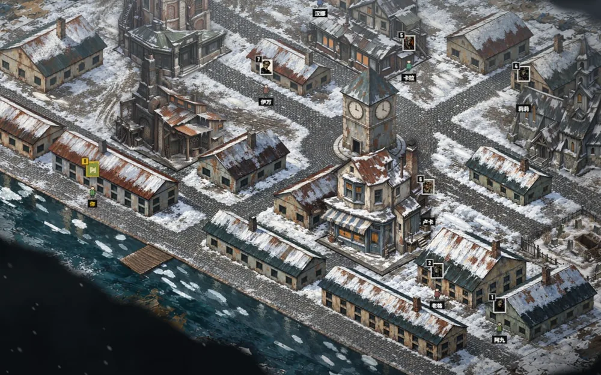
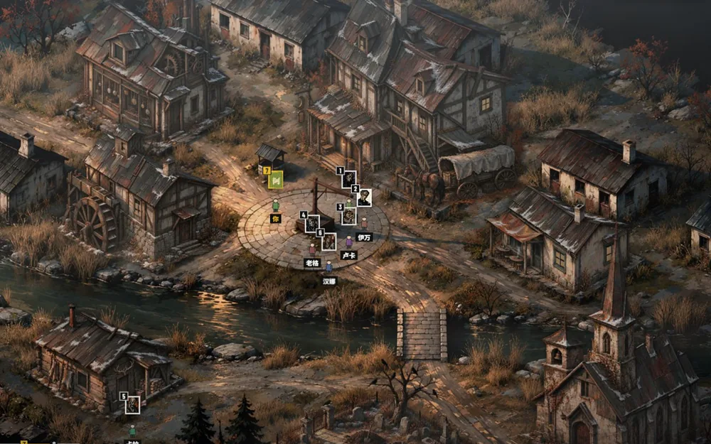
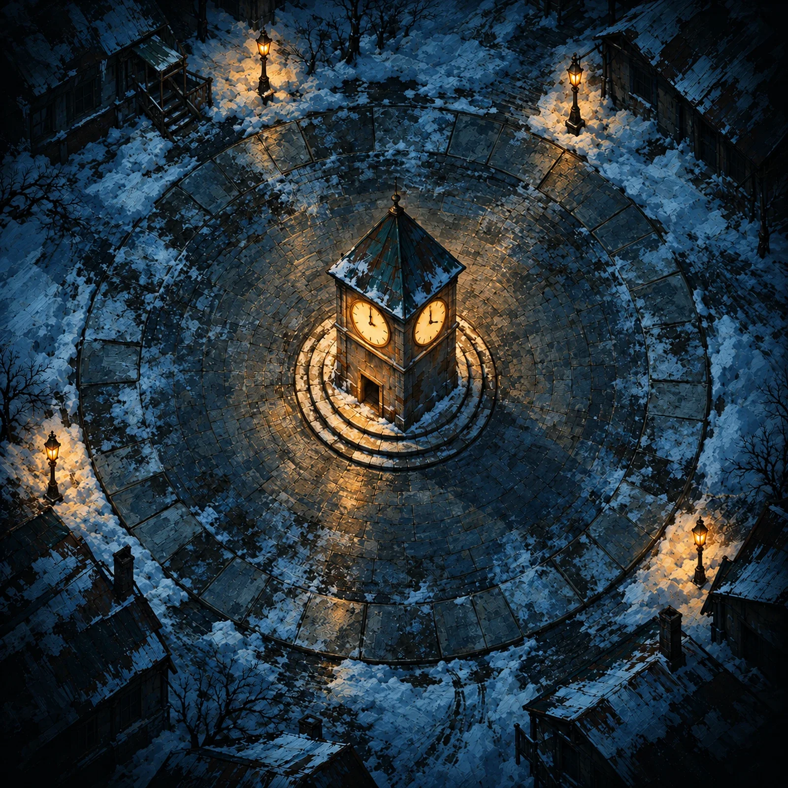

雪夜 · 钟楼镇暗流涌动
Trouble Brewing官方的入门剧本。信息角色多，规则直观，第一次玩就选它。只有一个恶魔：小恶魔。
13 镇民4 外来者4 爪牙1 恶魔
6 间能进的房子1酒馆2教堂3铁匠铺4面包房5图书馆6墓园
没人当说书人？AI 房主来。走进房子，Discord 自动把你拉进那间的语音。拉机器人进服务器，喊上朋友就能玩。
1剧本
每个剧本一张自己的地图。标了号的房子都能走进去，各有一个语音频道。更多剧本正在制作中。

雪夜 · 钟楼镇官方的入门剧本。信息角色多，规则直观，第一次玩就选它。只有一个恶魔：小恶魔。
13 镇民4 外来者4 爪牙1 恶魔

黄昏 · 黯月驿站进阶剧本：夜里死得多，能保护人的角色也多。四个恶魔各有各的杀法，猜恶魔是谁之前，先得猜是哪一个。
13 镇民4 外来者4 爪牙4 恶魔
2Discord 语音
线下私聊得躲进走廊，全场都看着你。这里你在地图上走进哪间房子，Discord 就把你拉进那间的语音频道。
机器人新建那间房子的语音频道，把你拉进去。频道只有屋里的人看得到。
屋里的人可以锁门，门外的人只能敲：让他进来，或者假装没人。
人走光了，频道自动删掉。敲钟集合，所有人回到钟楼广场。
血染钟楼
你在钟楼广场。教堂里阿澈和小满锁着门在私聊。
3AI 说书人
说书人要背规则、记全场身份、编假信息、控局势，最难找。AI 房主替你做；房主也可以自己当说书人，审核、改写每一条夜晚信息。
53 套推荐配置，官方的优先。人数对不上，AI 配平，不出一边倒的板子。
入夜全场闭麦闭耳，按官方夜间顺序挨个叫醒。所有人选完就立刻结算，不用干等。
醉酒、中毒的人拿到的假信息前后对得上：给他编一整套「假世界」，别人也有办法反证。
哪边落后，就在规则内帮一把：看爪牙死了几个、恶魔被怀疑多深、好人死了几个。
每个判定都记进手记，终局公开。说书人不是黑箱。
4 号今晚中毒，真实答案是 1，给 0。3 号白天自称士兵，这条让他看起来更干净。局势：邪恶略占上风。
4按照百科
照集石官方中文百科：47 个角色的能力、夜间顺序、人数配置，都按百科写。每张能力牌都是为这个游戏画的。点一个角色看看。
开启 JavaScript 以后，这里能按阵营查看全部角色。
5村规开关
官方规则之外，各家都有自己的玩法。常见的村规单独列在大厅的「房间设置」里，想怎么玩，房主说了算。
右边是游戏里的那块面板。开关试试，下面会写清官方怎么规定、打开后有什么不同。
6连线标记
猜身份、写笔记、画关系线，在集会广场上直接标、直接连。只存在你自己的设备上，别人看不到；下一局自动清空。

标记：你觉得他是哪一类
连线：两个人之间的关系
先选一种标记或连线，再点广场上的人。
游戏里右键头像打标记、左键拖出连线；手机上长按。
查看频道、发消息、连接语音、管理频道、管理身份组、移动成员、闭麦、闭耳。闭麦闭耳用来入夜「闭眼」；移动成员用来把你拉进房子的语音；管理频道和身份组用来给私聊房间设权限，锁上门别人就进不来。
一、点「添加到 Discord」把机器人拉进你的服务器（要有「管理服务器」权限）。二、大家进同一个语音频道，房主也要在里面，那里就是钟楼广场。三、在文字频道点输入框旁的应用启动器，选「血染钟楼」；从文字频道开，机器人在语音之间拉人时不会把你踢出活动。四、房主选剧本、说书模式和村规，大家点「加入游戏」。第一次拉机器人大约一分钟，一局一小时上下。
不是。AI 房主是一套照官方规则写的自动说书算法：配板、叫醒、结算、编假信息、看局势帮落后的一方，判定全记进手记、终局公开。它不和你聊天。
5 到 15 人。人不够的话，房主可以在大厅里补机器人玩家，凑满再开。
有开场动画和练习局，分步提示里带小演示：翻身份牌、夜里选人、进房子锁门、提名投票，都先演一遍给你看。能力说明里的规则词，鼠标放上去就有解释。
能。Discord 手机端也能打开活动，手机上有自己的竖屏布局：广场改成竖着的圆，面板排在画面下方。
不收费。这是非官方的粉丝作品，不以盈利为目的，与 The Pandemonium Institute 无关。
掉线重新打开活动就回到原来的座位。后端重启的话，进行中的这一局会丢；闭耳状态会记下来，重启后自动解除，不会有人一直被静音。
能。代码全在 GitHub 仓库，README 写了怎么建 Discord 应用、填 .env、跑起来。